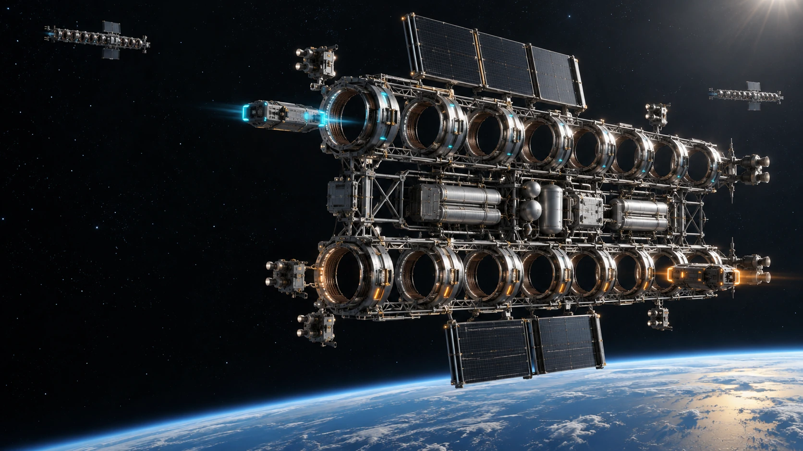
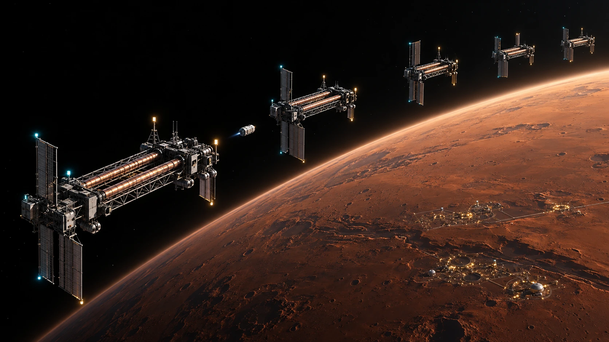
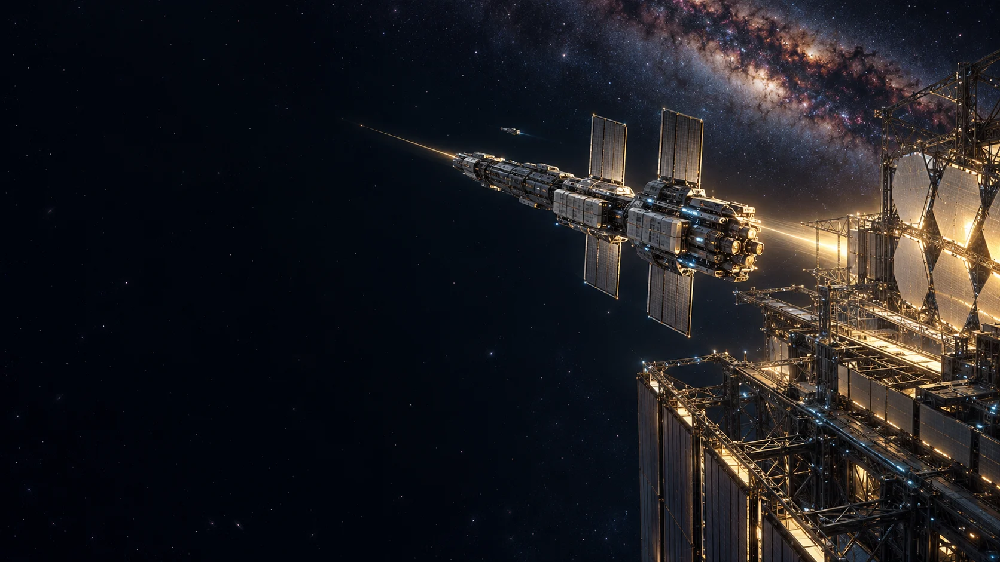

人类必将走出地球。
探索把我们带到另一颗星球，生活与工业让我们留在那里。地球终将从唯一的世界，成为共同的故乡。
探索把我们带到另一颗星球，生活与工业让我们留在那里。地球终将从唯一的世界，成为共同的故乡。
第一座基地需要补给，第一座工厂需要机床，第一座城市需要贸易。一次远征，变成两端之间持续的货流。
每次出发都付出的代价，会写进每一件产品的价格。线路越繁忙，共用一套基础设施就越有价值。
铁路如此，港口如此。走到行星之间，同一条规律依然成立：把昂贵的推进设备留在车站，让后来每一批货物共用它。
人类需要一个多行星文明。
多行星文明，需要它的铁路。
地表升轨。环轨加速。转向离港。
跨越深空，再把速度变回电。
一条干线，两端车站，反复使用。

把地表货物送入真空作业区。电梯与主动支撑设施接驳环轨。
导轨不必铺满整圈。货舱循环通过各段，逐次获得速度。
在可承受的转弯半径内调整方向，按行星相位驶入转移轨道。
目的端按速度分级制动，把回收的电能送进本站下一次出发。
高度。环轨工作区要避开稠密大气；完整升轨体系需跨越更大的高度，不能把大气层边缘当作电梯终点。
半径。弯道加速度 a＝v²/r。10 km/s 在约地球尺度半径上的向心加速度已达约1.6g，速度更高就需要更大的转弯尺度。
动量。导轨、支撑、行星与货舱共同交换动量。双向货流、轨道维护与储能调度，是车站长期运营的一部分。
从10.0到10.1 km/s的加速，
可以对应从10.1到10.0 km/s的减速。
能量开始周转，车站开始像一条铁路。
零，是理想可逆循环的极限。
低边际成本，是每一代工程都能继续逼近的方向。
演示按等质量、同一参考系、同一速度段计算 ΔK＝½m(v₂²−v₁²)。整条航线还需支付升轨、势能差、轨道调整与系统损耗；电能在本站回收和调度。
跟随一只货舱完成地火运输。
从地表出发，把速度交还给目的港。
点击阶段，也可以逐段观察。
升轨设施把地表货物送入真空环轨，完成交接。

第一班交付的是设备。
往后的每一班，都是一个世界的日常。

当火星开始制造机床，小行星开始建造船坞，
太阳系就获得了派出第一支建港船队的能力。

1000吨级种子工程船，携带能源、机器人、加工设备与设计档案出发。它必须自主减速，因为目的地还没有人替它刹车。
52.1年后，抵达。开发产生货流，货流需要交通。
每一代新港建成后，向两个新目标各派出一支建港船队。
一代人，点亮第一座外星港。
许多代人，把后来的路继续接下去。
城市会买设备，工厂会买原料，
贸易会支付运费。
我们建设两端基础设施，按吨收取通行与港务费用。
两端环轨、港站、能源与调度
2222—2229 / 八年建设
双向合计货流
设备 · 工业材料 · 高值产品
变动成本600信用点 / 吨
固定运营与更新200亿信用点 / 年
成熟年运量达到约588万吨，可覆盖运营与更新支出。
年净现金流＝年运量×（运价−600信用点/吨）−120亿固定运营−80亿更新。60年经营，8年等额建设投入，现金流均按年末计。项目IRR不含融资杠杆；NPV使用5%折现率。
基准口径：首期地火干线，2.4万亿信用点建设投资。沿用可接入的升轨主干设施，计入接驳改造；全新建设完整太空电梯不在这笔首期预算内。远期恒星工程单独筹资。
“经营期静态回收”从开通计算；从2222年开工计算需再加8年。资金单位全站统一为信用点。商业测算使用2222年路演的设定参数，可用滑块直接改变。
以一期2.4万亿信用点为建设目标。
面向长期资本、产业伙伴与港站运营方，
共同建设地球—火星货运干线。
人类走向群星的第一步，
是让第二次出发，比第一次更容易。